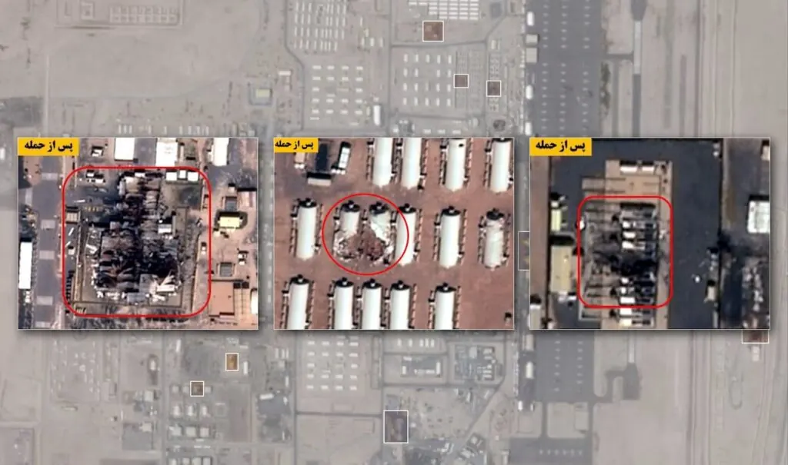

مع الحرب الأخيرة على إيران التي شنتها اسرائيل والولايات المتحدة الأمريكية يوم 28 فبراير 2026، عاد الوجود العسكري الأمريكي في الشرق الأوسط إلى الواجهة، إذ توالت الأنباء عن استدعاء واشنطن حاملات طائرات وقوات وقطع عسكرية إضافية إلى المنطقة، ما يطرح سؤالاً مهماً، لماذا تحتاج الولايات المتحدة إلى استدعاء تعزيزات من خارج المنطقة، بينما تحتفظ بشبكة واسعة من المواقع العسكرية فيها؟
منذ سنوات الحرب على العراق، لم تحتفظ واشنطن بحضورها العسكري في الشرق الأوسط على الصورة ذاتها؛ إذ انخفضت الكتلة البشرية الضخمة التي ميّزت مرحلة الغزو والاحتلال، لكنها لم تتخلَّ عن القدرة على العودة السريعة عند الأزمات. ويعتمد هذا التحقيق على بيانات جُمعت من مصدرين رئيسيين: قاعدة U.S. Troop Deployments لتغطية الفترة من 2000 إلى 2023، وتقارير وزارة الدفاع الأمريكية لسنتي 2024 و2025.غير أن لهذه البيانات محددات واضحة، إذ لا تتوافر قاعدة مستقلة موازية للتحقق الكامل من جميع الأرقام، كما أن بعض القواعد أو المواقع العسكرية في المنطقة قد لا تكون موثقة بصورة كاملة، ما يعني أن النتائج تعكس اتجاهات عامة مهمة، لكنها لا تمثل حصرًا نهائيًا ومكتملًا للوجود العسكري الأمريكي في الشرق الأوسط. وتوضح هذه البيانات مسار عدد القوات الأمريكية العاملة في الشرق الأوسط، لكنها لا تختزل وحدها كامل الوجود العسكري الأمريكي، الذي يشمل أيضًا القواعد، والقدرات البحرية والجوية، وسرعة التعزيز من خارج المنطقة. لذلك لا يُقرأ الانخفاض العددي هنا بوصفه انسحابًا كاملًا، بل بوصفه مؤشرًا على تغير شكل الوجود العسكري الأمريكي نفسه: من نموذج الحشود الكبرى إلى نموذج التموضع المحدود والمرن.
وبينما يعتقد كثيرون أن الحضور العسكري الأمريكي في الشرق الأوسط ضخماً، تكسر المقارنة بين 2007 و2025 هذا الاعتقاد السائد مباشرة. إذ تكشف البيانات أنه في العام 2007 بلغ عدد القوات الأمريكية في الشرق الأوسط ما يزيد عن 291 ألف جنديًا، ثم انخفض في عام 2025 إلى نحو 6500 فقط، أي بتراجع يقارب 97.7% بين لحظة الذروة ونهاية السلسلة. لا تكشف هذه الفجوة رقمين متباعدين فقط، بل تكشف أن الشرق الأوسط لم يعد اليوم مركز الثقل العددي نفسه الذي كان عليه في سنوات العراق. وتزداد دلالة سنة الذروة حين نضعها في إطار أوسع: ففي 2007 استوعب الشرق الأوسط نحو 21.4% من إجمالي القوات الأمريكية العاملة عالميًا، أي أن أكثر من خُمس القوة الأمريكية العاملة كان متمركزًا في المنطقة في تلك اللحظة. بهذا المعنى، لم يكن الشرق الأوسط آنذاك مسرحًا عسكريًا مهمًا فحسب، بل واحدًا من أكبر مراكز الثقل العسكري الأمريكي في العالم.
يكشف المسار الزمني أن الوجود الأمريكي لم يتحرك بخط ثابت، بل مرّ بثلاث مراحل واضحة: صعود حاد، ثم ذروة، ثم تراجع مستمر حتى العام 2025. ففي مطلع الألفية، بقي الوجود الأمريكي قائمًا لكنه محدود نسبيًا: نحو 17 ألف جندي في 2000، و20 ألف في 2001. عند هذه المرحلة، لم تكن المنطقة قد دخلت بعدُ في مرحلة الحشود الكبرى. ثم جاءت سنة 2003، وكسرت الإيقاع كله، فقد رفع غزو العراق عدد القوات الأمريكية في الشرق الأوسط إلى 217 ألف جنديًا، بعد أن كان 47 ألف فقط في العام السابق، أي بزيادة بلغت 356.6% خلال عام واحد. لا تعكس هذه القفزة توسعًا طبيعيًا في الانتشار، بل تعكس دخول الولايات المتحدة مرحلة جديدة أعادت فيها تعريف الشرق الأوسط بوصفه مسرحًا مركزيًا لحربها المفتوحة.
من الغزو إلى الذروة: كيف دفعت حرب العراق الوجود الأمريكي إلى أقصاه؟
لم تدفع حرب العراق الوجودَ العسكري الأمريكي إلى الارتفاع فحسب، بل أدخلته في منطق جديد يقوم على التوسع المستمر كلما تعمقت الحرب وتعقدت إدارتها. فبعد الغزو، لم تعد واشنطن تتعامل مع الشرق الأوسط كساحة انتشار تقليدية، بل كساحة حرب مفتوحة تطلبت احتلالًا طويلًا، ومواجهة تمرد متصاعد، واحتواء عنف طائفي متفاقم، ثم لاحقًا ضخ تعزيزات عسكرية واسعة. وفي هذا السياق تحديدًا ينبغي فهم سنوات ما بعد 2003: لا بوصفها مجرد أرقام تصعد تدريجيًا، بل بوصفها سنوات كانت فيها الحرب نفسها تفرض مزيدًا من الجنود والموارد على القرار الأمريكي عامًا بعد عام. لذلك لا تظهر ذروة 2007 كرقم منفصل عن مساره، بل كنتيجة مباشرة لحرب أخذت تتسع وظيفيًا وسياسيًا وعسكريًا، حتى جعلت الشرق الأوسط أحد أكبر مسارح الانتشار العسكري الأمريكي في العالم.
ويرى الباحث في الدراسات الأمنية النقدية هادي مجدلاني أن قراءة هذه المرحلة يجب ألا تقتصر على صعود الأعداد، بل على فهم طبيعة الوجود الذي أنتجته الحرب نفسها. فبرأيه، لم تكن الولايات المتحدة في تلك المرحلة تعتمد على وجود عسكري تقليدي محدود، بل على بنية انتشار أوسع، فرضتها حرب طويلة ومفتوحة، كانت تتطلب باستمرار مزيدًا من الجنود والموارد والقدرة على التوسع. ويعني ذلك أن الذروة التي بلغها الوجود الأمريكي لم تكن حدثًا منفصلًا، بل نتيجة تراكمية لمسار حرب فرض منطقه الخاص على القرار العسكري الأمريكي.
لم يبدأ الانعطاف بعد 2007 من داخل الرسم البياني فقط، بل بدأ أولًا من السياسة. ففي عام 2008 دخلت العلاقة العسكرية الأمريكية في العراق مرحلة جديدة مع توقيع اتفاقية وضع القوات بين واشنطن وبغداد (SOFA)، وهي الاتفاقية التي وضعت لأول مرة إطارًا قانونيًا واضحًا لإنهاء الوجود القتالي الأمريكي على صورته السابقة وتنظيم خروجه التدريجي. وفي السنة نفسها انفجرت الأزمة المالية العالمية، لتدفع كلفة الحروب الطويلة إلى صلب النقاش الأمريكي الداخلي. داخل هذا السياق المزدوج — إعادة ترتيب الوجود في العراق، وتصاعد الضغط الاقتصادي — بدأ الانخفاض العددي يظهر بوضوح، فتراجع عدد القوات الأمريكية في الشرق الأوسط إلى نحو 210 آلاف جندي. لذلك لا تبدو 2008 مجرد سنة انخفضت فيها الأرقام، بل سنة انكسر فيها منطق الحشود، وبدأت فيها واشنطن الانتقال من ذروة التصعيد إلى مرحلة الحسابات الأكثر حذرًا.
وفي تعليقه على هذه المرحلة، يلفت مجدلاني إلى أن ما جرى بعد الذروة لا ينبغي فهمه باعتباره انهيارًا مباشرًا للوجود الأمريكي، بل باعتباره بداية انتقال إلى نمط مختلف من الحضور. فهو يرى أن التراجع العددي، حتى عندما يكون واضحًا، لا يعني بالضرورة نهاية الدور العسكري الأمريكي، بل قد يعكس انتقالًا من نمط يقوم على الكتلة البشرية الكبيرة إلى نمط أكثر مرونة يعتمد على إعادة التموضع والقدرة على الرفع السريع عند الحاجة.
التحول في استراتيجية الحضور العسكري الأمريكي في المنطقة
حين وصل باراك أوباما إلى البيت الأبيض في 2009، لم يتعامل مع العراق بوصفه ملفًا عسكريًا فقط، بل إرثًا سياسيًا يريد إنهاءه. فقد أعلن مبكرًا أنه سيعمل على إنهاء الحرب وسحب القوات الأمريكية وفق الجدول الذي يسمح بإنهاء المهمة القتالية الأمريكية في العراق، ثم عاد في 2011 ليعلن أن جميع القوات الأمريكية ستغادر العراق بحلول نهاية ذلك العام. ضمن هذا السياق السياسي، لم يعد تراجع الوجود الأمريكي في الشرق الأوسط مجرد حركة هبوط على الرسم، بل أصبح تعبيرًا عن قرار استراتيجي بتفكيك نموذج الحشود الذي حكم سنوات الغزو وما تلاها.
ويؤكد مجدلاني أن هذه المرحلة لا تُقرأ فقط بوصفها انسحابًا من حرب محددة، بل بوصفها جزءًا من إعادة تعريف الوجود العسكري الأمريكي نفسه. فبحسب قراءته، لم تعد واشنطن تسعى إلى إعادة إنتاج النموذج البري الكثيف الذي ساد خلال سنوات العراق، بل بدأت تتجه إلى بنية حضور مختلفة، تحافظ على القدرة على التدخل، لكنها تتجنب التمركز البري التقليدي الواسع.
لم ينخفض الوجود العسكري الأمريكي بعد ذلك في خط مستقيم، لأن المنطقة نفسها لم تدخل مرحلة هدوء مستقرة. ففي 2017 جاء الارتفاع المؤقت في عدد القوات داخل سياق سياسي وعسكري مختلف عن سنوات العراق: فقد وضعت إدارة ترامب هزيمة تنظيم داعش في صدارة خطابها الأمني، وعادت إلى مقاربة أكثر صدامية تجاه إيران، قبل أن تنسحب لاحقًا من الاتفاق النووي في 2018. لذلك لا ينبغي قراءة هذا الارتفاع بوصفه عودة إلى منطق الحشود الكبرى، بل بوصفه لحظة رفعت فيها واشنطن مستوى وجودها في إطار نموذج أكثر مرونة: ترفع حين تتطلب الحالة ذلك، ثم تعود إلى التقليص بعد انحسارها. ومع مرور الوقت، أصبح هذا النموذج أكثر وضوحًا، خصوصًا مع انتقال الوثائق الاستراتيجية الأمريكية من الانشغال بحروب الشرق الأوسط إلى التركيز على منافسة القوى الكبرى؛ فاستراتيجية الأمن القومي لعام 2017 أبقت على أولوية هزيمة الإرهاب، بينما جعلت استراتيجية الدفاع الوطنية لعام 2022 الصين “التحدي المُحدِّد للإيقاع” للتخطيط الدفاعي الأمريكي. بهذا المعنى، لا يفسر تراجع الوجود الأمريكي في الشرق الأوسط إرث العراق وحده، بل يفسره أيضًا تحول مركز الثقل الاستراتيجي الأمريكي نفسه.
الوجود الأمريكي في 2025: شبكة حضور لا حشود
ويعزز مجدلاني هذا الفهم حين يصف الحضور الأمريكي الراهن بأنه أقرب إلى شبكة من الوجود العسكري منه إلى تمركز بري تقليدي واسع. وبرأيه، يعمل هذا النموذج على إرسال تطمينات للحلفاء في بعض الأحيان، ورسائل سياسية في أحيان أخرى، مع ترك هامش لعمليات محدودة أو رفع مستوى الحضور عند الضرورة، من دون العودة إلى نموذج الحشود الذي طبع سنوات الاحتلال والحرب المفتوحة.
وفيما يتعلق بالردع، يرى مجدلاني أن الحرب الأخيرة أظهرت أن الحديث عن ردع كامل بات أكثر تعقيدًا مما كان عليه سابقًا. فبرغم ما تملكه الولايات المتحدة من تفوق تكنولوجي وقدرات لوجستية وسلاسل إمداد واسعة، فإن التجربة المباشرة للحرب، ومحاولات استهداف القواعد أو السفن الأمريكية، تجعل الردع في هذه المرحلة أقرب إلى عملية اختبار متبادل للحدود والقدرات، لا إلى حالة مستقرة ومكتملة.
لا يقود الانخفاض الحالي إلى الاستنتاج بأن الولايات المتحدة خرجت من الشرق الأوسط، بل إلى سؤال أدق: أين أبقت واشنطن وجودها، وعلى أي نوع من العقد الاستراتيجية اعتمدت؟ هنا تكتسب خريطة 2025 معناها الحقيقي. فالبحرين، التي تتصدر الوجود الأمريكي في العام 2025، لا تُفهم أهميتها من الرقم وحده، بل من كونها تستضيف مقر الأسطول الخامس الأمريكي، أي إحدى أهم نقاط الارتكاز البحرية الأمريكية في الخليج منذ عقود. أما تركيا، التي تأتي في المرتبة الثانية، فلا تبرز أهميتها من حجم القوات فقط، بل من موقعها الجيوسياسي بوصفها عضوًا في حلف الناتو، وجسرًا بين الشرق الأوسط وفضاءات أمنية أوسع. وعندما تنضم إليهما الكويت والسعودية وقطر، تتضح البنية الجديدة للحضور الأمريكي: لم يعد الوجود قائمًا على ملء المنطقة بجنود كما في سنوات الحرب على العراق، بل على شبكة عقد بحرية وجوية ولوجستية متخصصة، تسمح لواشنطن بأن تبقي وجودها أقل عددًا، لكنها تحتفظ بقدرتها على التحرك السريع عند الحاجة.
ويرجّح مجدلاني أن يتجه الوجود العسكري الأمريكي في الشرق الأوسط، بعد حرب الأربعين يومًا على إيران، نحو مزيد من إعادة التموضع، لا نحو انسحاب كامل ولا إلى عودة لنموذج الحشود الكبرى الذي عرفته المنطقة في سنوات العراق. وبرأيه، أثبتت الحرب الأخيرة أن واشنطن ما تزال تحتاج إلى حضور قادر على الردع، وحماية القواعد والممرات، وطمأنة الحلفاء، لكنها لا تبدو مستعدة سياسيًا أو استراتيجيًا لتحمّل كلفة تمركز بري واسع ومستدام كما في العقد الأول من الألفية. ولذلك يتوقع بقاء القواعد والعقد العسكرية الرئيسية، مع اعتماد أكبر على القوات البحرية والجوية، وعلى التعزيز السريع عند الأزمات، بدل الاحتفاظ الدائم بأعداد بشرية ضخمة في المنطقة.

لكن هذا التموضع الجديد لا يبدو فقط نتيجةً لقرار أمريكي بإعادة تعريف الوجود العسكري، بل أيضًا نتيجةً مباشرة لتغيّر ساحة الحرب نفسها. فبحسب تحقيق لصحيفة واشنطن بوست استند إلى صور أقمار صناعية، تعرّضت أصول ومنشآت ومعدات أمريكية في عدد من القواعد بالمنطقة لأضرار واسعة خلال الحرب مع إيران، كما أُخليت مواقع وأُعيد توزيع أفراد بسبب تصاعد الخطر على بعض القواعد الثابتة. وفي هذا السياق، لم يعد السؤال مقتصرًا على كيف خفّضت واشنطن أعداد قواتها، بل امتد إلى ما إذا كانت الحرب الأخيرة قد دفعتها أيضًا إلى تقليص جدوى التمركز البري الثابت نفسه، لصالح حضور أخف وأكثر رمزية في البحار والجو، تمهيدًا لمرحلة جديدة قد تعيد تشكيل هذا الوجود وتفتح بابًا لتحولات أوسع في موازين القوى الإقليمية.